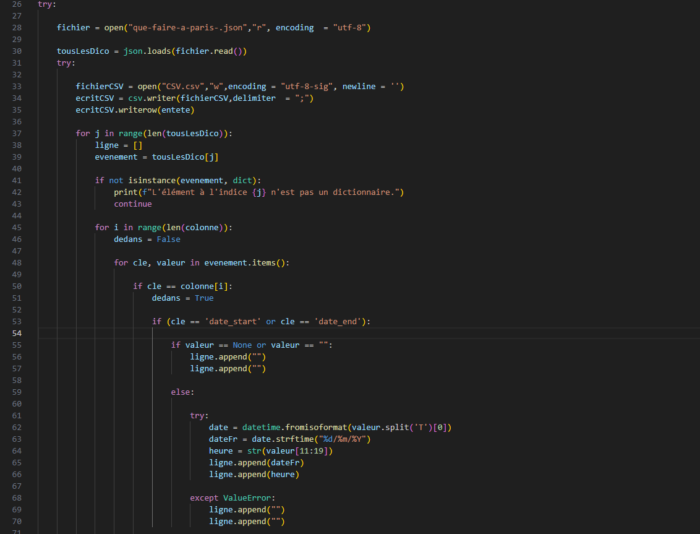
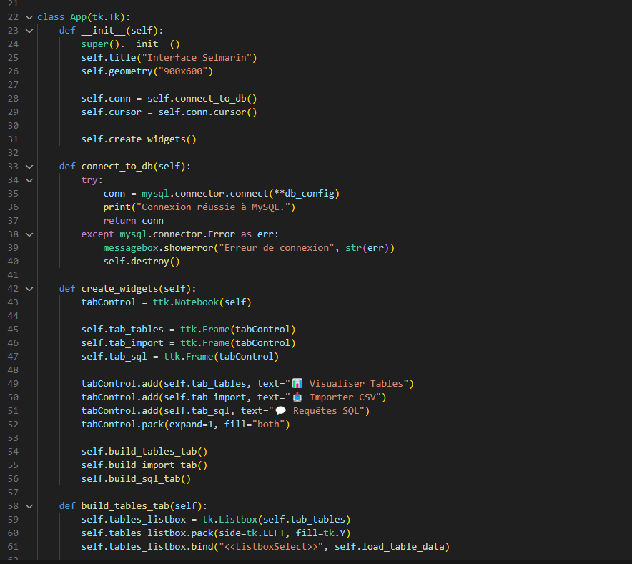
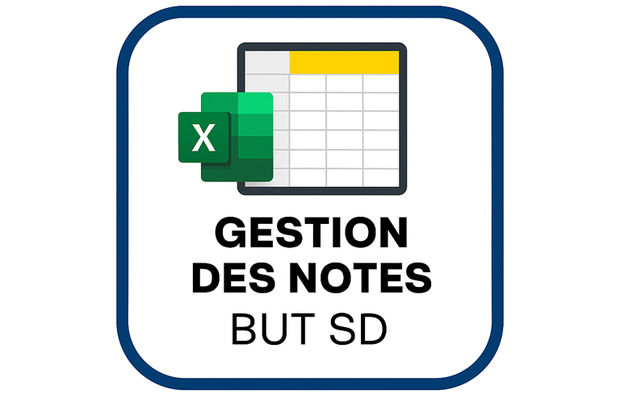
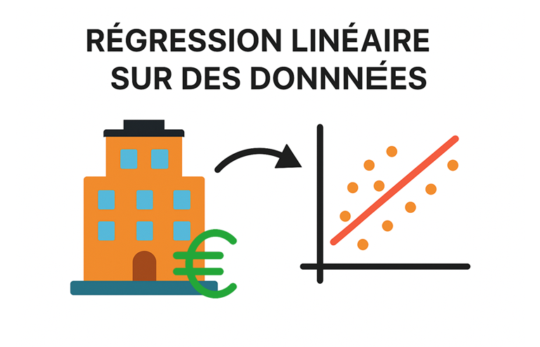
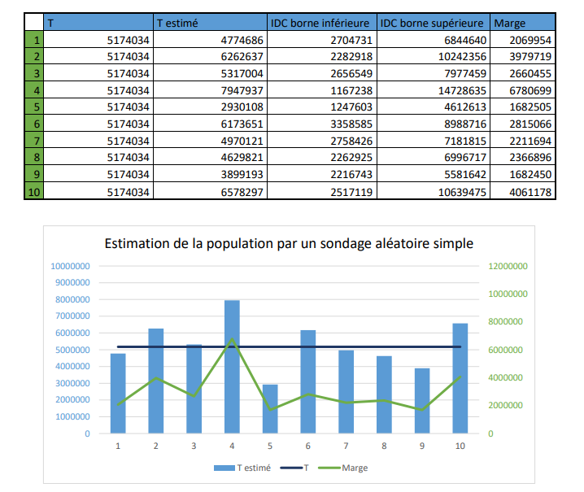
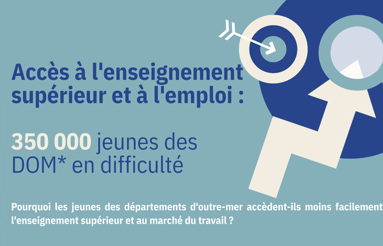
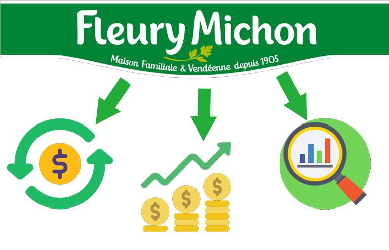
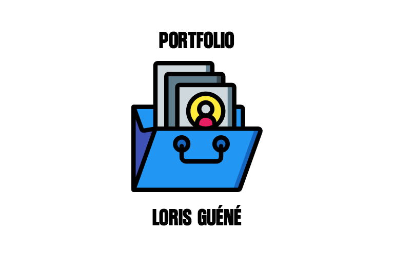

Découvrez les projets académiques et personnels réalisés au cours de ma formation en Science des Données.

Extraction et traitement de données d’un fichier JSON pour produire un CSV structuré.

Conception complète d’une base MySQL et d'une interface Tkinter pour une coopérative de sel.

Création d’un tableau Excel dynamique sous VBA pour suivre ses notes et compétences.

Prédiction de prix immobiliers à partir d’un modèle statistique construit manuellement en R.

Estimation de population et analyse statistique descriptive avec R sur des données de communes.

Conception d’une infographie sur la scolarisation des 15-29 ans avec Power BI et Canva.

Analyse de performance financière et diagnostic d'entreprise à partir d'indicateurs économiques.

Conception de ce site personnel interactif pour présenter mes projets, compétences et parcours.